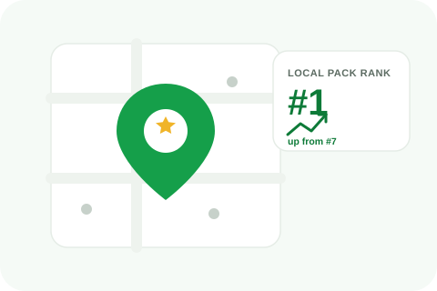

A business with 200 reviews from five years ago and almost nothing posted since wants to know whether that history still genuinely props up its local ranking, or whether Google has quietly stopped crediting it for activity that's gone stale. The honest answer is that recency matters to the ranking algorithm in a way it doesn't to the review's own visibility.

This is a genuinely different question from whether reviews expire or age out on Google, that post addresses whether an individual review stays visible on your listing, which it does indefinitely regardless of age. This post addresses something separate: whether old reviews carry the same practical weight in the local ranking algorithm today that they did back when they were fresh.
Google's own guidance on local ranking cites review recency alongside quantity and overall sentiment, meaning a steady stream of recent reviews signals an actively evaluated, currently relevant business more strongly than a large historical total that simply stopped growing at some point. A five-year-old spike of 200 reviews with nothing meaningful since looks, to the algorithm, less like proof of current quality and more like a business that peaked once and then quietly plateaued.
This doesn't mean your historical review total becomes worthless, review volume generally helps ranking, and a large base still signals established credibility. What changes is the relative weight: a smaller but actively growing recent review base can outcompete a much larger but stagnant one on the recency dimension specifically, even if the stagnant business still wins on raw volume.
Long-running businesses that built a strong review base years ago and then coasted are the ones most likely to be genuinely surprised by a ranking decline that has nothing to do with service quality dropping at all. If your actual customer experience hasn't changed but your map pack position has slipped gradually over time, a stalled review pipeline is a reasonable first thing to check before assuming something else entirely went wrong.
There's no way to retroactively make old reviews "count as recent." The only real lever is resuming a consistent, ongoing flow of new reviews, which rebuilds the recency signal over months rather than overnight. Businesses that treat review collection as a continuous practice rather than a one-time project are the ones whose historical strength actually compounds instead of quietly fading from the ranking algorithm's view.
Recognizing that recency matters is not license to flood your profile with a sudden unnatural burst of new reviews to compensate. A sharp, artificial spike reads as suspicious to Google's own detection systems in much the same way it does on other platforms, and risks the review activity itself getting flagged rather than counted. The goal is a steady, believable pace that matches how an actual business realistically generates ongoing customer feedback.
We rebuild a consistent, genuine review flow as part of ongoing local SEO support.